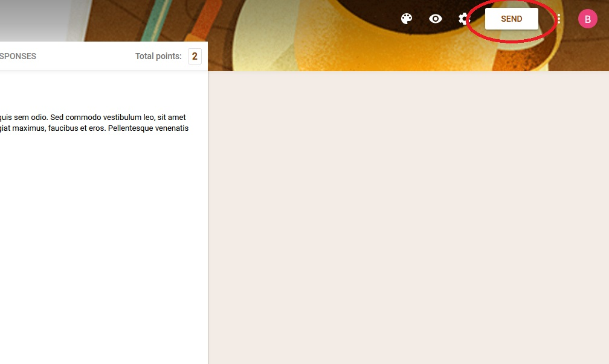

Cara Mudah Membuat Google Forms Bagi Pemula
By Ernard Anky
Memperoleh data via survei memang memberikan banyak benefit, mulai dari untuk bisnis, penelitian, hingga pembelajaran. Kuisioner atau survei konvensional saat ini tentunya terasa tak efektif lagi, cara konvensional terasa tak irit kertas dan lebih menyita banyak waktu.
Oleh sebab itu, Google menyediakan akses Google Forms dimana kalian bisa menyediakan kuisioner secara digital dan mudah. Cara membuat Google Forms sendiri terbilang sangat simple dan mudah, namun sayangnya saat ini masih banyak orang tak paham cara membuatnya. Bagi kalian yang masih kebingungan, melalui tutorial ini kami akan memberikan cara membuat Google Forms dengan mudah.
Pertama, kenali dulu jenis kuisioner atau survei yang ingin kalian buat, Google membuat 5 jenis yang bisa digunakan sesuai kebutuhan.
1. Login pada akun google yang telah kalian miliki.
2. Klik pada link berikut ini untuk langsung menuju Google Forms.
3. Disini kalian dapat memilih dua jenis lebar jawab/kerja, yaitu blank form dan menggunakan template.
Untuk survei ataupun kuesioner yang formal lebih cocok menggunakan black form
Untuk keperluan lainnya opsi template bisa dipilih, karena ada banyak template yang bisa mempermudah keperluan kalian, seperti pembuatan quiz simple, informasi kontak, dan lain sebagainya, pilih saja sesuai kebutuhan.
4. Buat judul lembar Google Forms dengan cara mengklik bar di bagian pojok kiri atas.
5. Mulailah buat pertanyaan, tiap pertanyaan nantinya bisa kalian berikan variabel sesuai dengan keinginan kalian.
Sementara untuk pertanyaan seperti quiz, kalian bisa memberikan pilihan dengan jawaban salah dan benar, lebih mudahnya menggunakan opsi multiple choice/pilihan ganda seperti berikut.
6. Jika semua semuannya sudah sesuai dengan keinginan kalian, langsung saja share Google Forms buatan kalian tersebut dengan cara mengklik tulisan “Send” di bagian pojok kanan atas.

Klik icon “share” dan copy link Google Forms yang telah kalian buat tersebut.
Setelah itu kalian bisa membagikan link tersebut kepada para penjawab kuisioner, survey, ataupun pertanyaan yang telah kalian buat melalui Google Forms tersebut.
Itulah cara mudah membuat Google Forms, semoga dapat membantu kalian yang tengah melakukan survey ataupun penelitian lainnya.
Sampai jumpa lagi di Tulisan-tulisan lain dari saya, dan jangan lupa untuk baca Artikel dan Berita menarik lainya seputar teknologi dari Ernard Anky.


 Natapradipta17@gmail.com
Natapradipta17@gmail.com